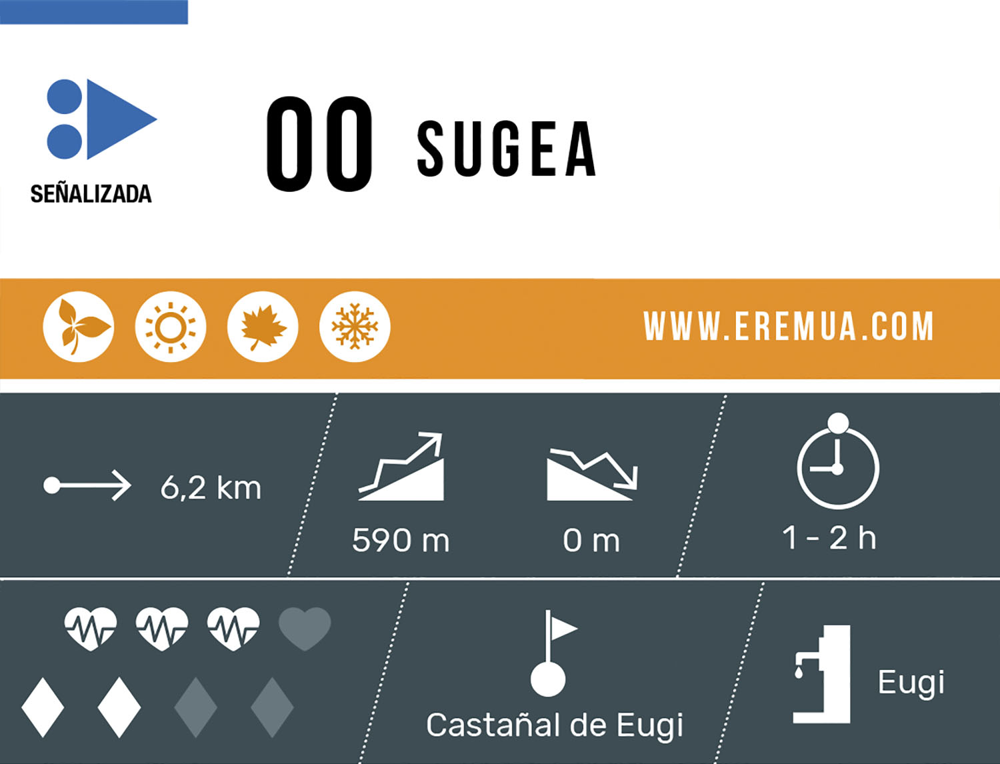
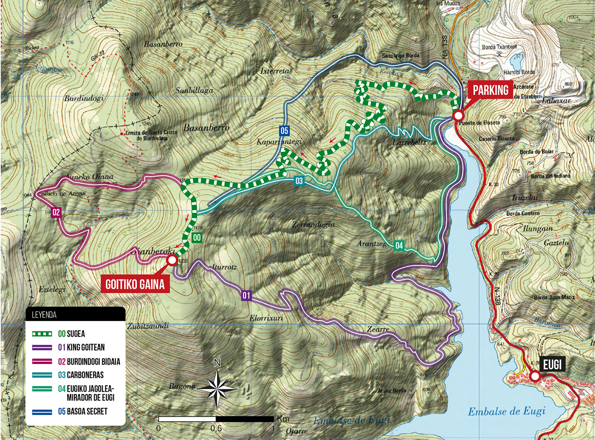
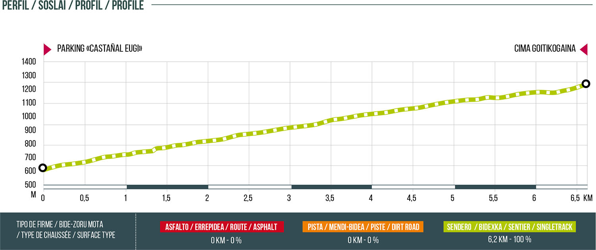

EUSKERA
ES
Itzuli zerrendara


ZAILTASUN ERTAINA
Luzera osoa
6,2 km
Garaiera positiboa
590 m
Garaiera negatiboa
0 m
Burdindogiko pagadia zeharkatuz, gorako bidea hartzen duen bidexka ederra. Bidexka hori erabiltzen da sektore honetako jaitsieretara joateko: Magnun, Secret, Carboneras, Dragon Khan y King Kobra. Hasiera Eugiko urtegiaren muturraren ondoko aparkalekuan dago, eta bukaera Goitikogainean. Gora gozatzeko aukera ezin ederragoa!

GARRANTZITSUA: bidexkak igotzeko norabidea du, soilik. Gomendagarria da EZ jaistea bizikletan toki beretik istripuak saihesteko eta higadura murrizteko.

HASI IBILBIDEA